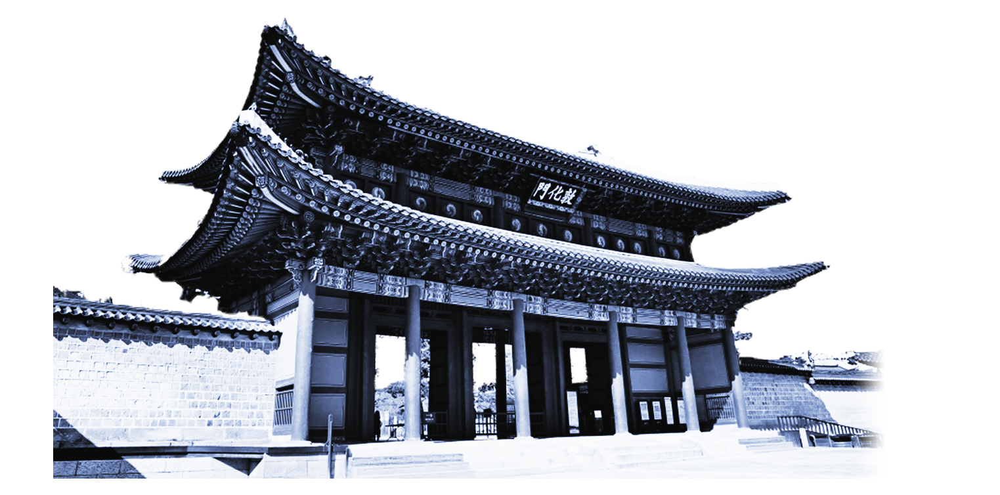
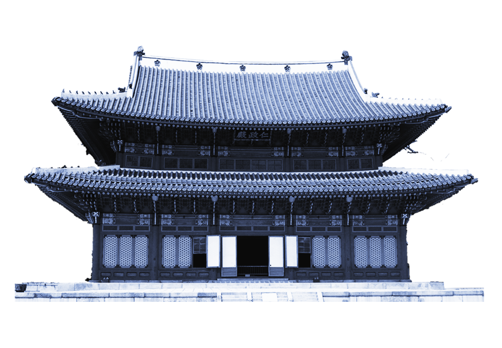
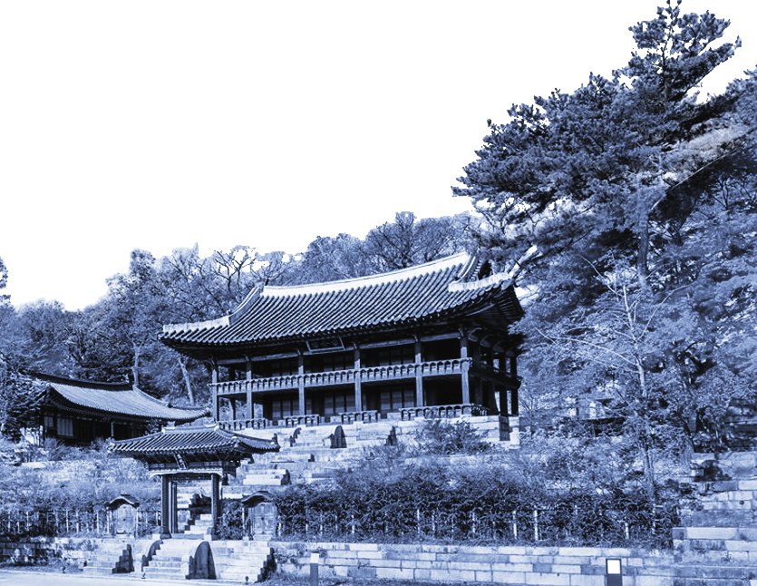

-
arrow_forward_ios
돈화문
모와 품위를 함께 갖춘, 창덕궁의 정문
창덕궁의 정문인 돈화문은 1412년(태종 12)에 건립되었다. 창건 당시 창덕궁 앞에는 종묘가 자리 잡고 있어 궁의 진입로를 궁궐의 남서쪽에 세웠다.2층 누각형 목조건물로 궁궐 대문 가운데 가장 큰 규모이며, 앞에 넓은 월대를 두어 궁궐 정문의 위엄을 갖추었다.돈화문은 왕의 행차와 같은 의례가 있을 때 출입문으로 사용했고, 신하들은 서쪽의 금호문으로 드나들었다. 원래 돈화문 2층 누각에는 종과 북을 매달아 통행금지 시간에는 종을 울리고 해제 시간에는 북을 쳤다고 한다. 돈화문은 임진왜란 때 전소되었다가 광해군이 즉위한 이듬해인 1609년에 재건되었으며, 보물 제383호로 지정되어 있다.

-
arrow_forward_ios
arrow_back_ios
인정전
모와 품위를 함께 갖춘, 창덕궁의 정문
인정문은 창덕궁의 중심 건물인 인정전의 정문이다. 효종·현종·숙종·영조 등 조선왕조의 여러 임금이 이곳에서 즉위식을 거행하고 왕위에 올랐다.건물은 앞면 3칸· 붕은 옆면에서 볼 때 여덟 팔(八)자 모양을 한 팔작지붕이다. 지붕 처마를 받치기 위해 장식하여 만든 공포는 기둥과 기둥 사이에도 있는 다포 양식으로 꾸몄다.건물 안쪽 천장은 천장 재료가 훤히 보이는 연등천장이며, 단청은 가장 소박하게 꾸몄다.왕위를 이어받는 의식이 거행되던 곳으로, 정전인 인정전과 함께 조선왕조 궁궐의 위엄과 격식을 가장 잘 간직하고 있는 건축물이다.

-
arrow_back_ios
부용지
휴식과 학문적 용도로 쓰인 아름다운 건물들
이곳은 후원의 첫 번째 중심 정원으로,
휴식뿐아니라 학문과 교육을 하던 비교적 공개된장소였다.
300평(약 1000㎡) 넓이의 사각형 연못인 부용지를 중심으로 여러 건물을 지었다.
주합루 일원의 규장각(奎章閣)과 서향각(書香閣) 등은 왕실 도서관 용도로 쓰였고, 영화당(暎花堂)에서는 왕이 입회하는 특별한 과거시험을치르기도 했다. 영화당은 동쪽으로 춘당대 마당을, 서쪽으로 부용지를 마주하며 앞뒤에 툇마루를 둔 특이한 건물이다.
연꽃이 활짝 핀 모양의 부용정은 연못에 피어 있는 한송이 꽃의 형상으로 2012년 보물 제 1763호로 지정되었다.
